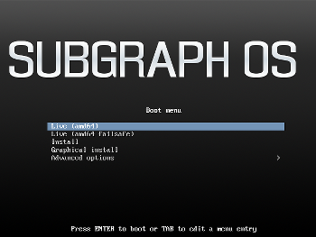
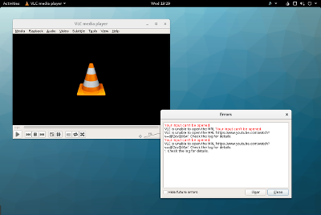
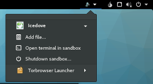

Subgraph OS, a new security-centric desktop distribution
Security-conscious Linux users have a new distribution offering to consider: Subgraph OS, a Debian-based operating system that implements system-hardening measures at a number of different levels. The kernel, filesystem, applications, and network configuration are all tweaked to isolate processes and connections and to safeguard the system against attackers. Although the project is a new one and not all of the promised features have been implemented yet, it appears to be well worth watching.

At the project's home page, Subgraph OS is billed as a "difficult to
attack
" operating system built with "system hardening and
a proactive, ongoing focus on security and attack resistance.
"
There is a set of pages documenting
the project's approach. That said, users should be aware that, at
present, the only installable releases are "pre-alpha" ISOs for x86_64
machines. The latest
is from February 22. Although the project describes Subgraph OS
as a lightweight offering (in particular, shipping only a small
assortment of applications), the ISO is a not-insignificant 1.5GB. It
can be run in live-DVD mode or be used to install Subgraph OS onto a
hard disk.
This release is based on the current Debian "testing" distribution (which will become Debian 9 "stretch"). Some of the application-level features are still unstable enough that they are likely to produce more crashes than successes, but there are many other interesting choices implemented in Subgraph OS that make it worth a look.
Security measures
The kernel is version 4.4.2, but with a few notable changes. First, the grsecurity patches have been applied; the project makes particular note of its usage of PaX to guard against memory-corruption vulnerabilities. The paxrat utility is used to set the PaX flags for individual applications; these flags control the use of secure memory protections, address space layout randomization (ASLR), trampoline emulation, and non-executable pages, among others.
The full kernel configuration used is available on GitHub, where several other changes are documented. Most notable is the deactivation of multiple network protocols (such as IPX, IrDA, X.25, and CAN Bus). IPv6 is among those deactivated protocols, which the notes on the GitHub page chalk up to the fact that Subgraph OS uses Tor for all network connections, and so far Tor does not sufficiently support IPv6. Tor's IPv6 support is an ongoing effort, and it is certainly true that few existing Tor nodes support IPv6—perhaps few enough to make relying on it a gamble.

Full-disk encryption using LVM and LUKS is mandatory in the Subgraph OS installer—the option to install without disk encryption is not even presented to the user. Network usage is restricted by two separate means. First, the Metaproxy redirector transparently redirects all network connections to Tor. Second, a firewall is configured to only permit a whitelisted set of applications to access the network. At present, the firewall rules must be manually adjusted to allow a new application access to the network, although the project advertises plans to integrate this process into the desktop. There are (currently non-functional) menu entries to monitor firewall connection requests and firewall settings, and the documentation cites plans to pop up a dialog box asking the user to confirm or deny network requests from non-whitelisted applications.
Interestingly enough, the Subgraph OS installer and the live-DVD session both start with all networking disabled; the user must even switch on wired networking through an option in the GNOME Shell system menu. There is also a built-in MAC address spoofer, which is run at start-up, can also be re-run at will, and can be configured to automatically run whenever a new network device is added.
Tor is, perhaps, a given for security-focused distributions these days. But Subgraph OS goes further than some. Each of the major applications (browser, email client, etc.) is isolated in a separate Tor circuit, and the GNOME Shell user menu includes a button to drop the basic Tor circuit (that is, the one connected through the general-purpose Tor endpoint to which other traffic is redirected by Metaproxy) and establish a new one. The Tor package also includes support for pluggable transports, which can be used to hide tor traffic within other connection types, thus providing better resistance to deep packet inspection.
Application security
At the application level, all of the major applications are started inside a sandboxing system that the distribution calls Oz. The system uses standard containment methods like namespaces, capabilities, and seccomp filters, plus the Xpra X11 forwarding server. On top of that, the latest ISOs have added AppArmor profiles for all "at risk" applications (a designation that includes network-capable applications plus any that might need to open files from an untrusted source—such as the PDF viewer or LibreOffice).

The Oz sandboxes are quite restrictive by default; applications cannot see any files in the user's home directory. To get around that access control, the user must use the Oz GNOME Shell extension. This provides a menu from which the user can manually grant access to a specific file, as well as perform some utility functions like opening a terminal within the sandbox.
The applications themselves are standard fare: Tor Browser, LibreOffice, the VLC media player, IRC and instant-messaging clients, a terminal emulator, and the Icedove email client. Interestingly enough, although a Tor Browser launcher is included on the panel, the first time it is launched it proceeds to download and install the latest Tor Browser release. This is a handy workaround for coping with how often Tor Browser receives important updates, although the initial wait time can be irritating.
The project site highlights a new email client in the works called Subgraph Mail, although it has not yet been released. Perhaps the most intriguing aspect of Subgraph Mail is that it is said to eschew traditional identity-verification systems like the OpenPGP "web of trust," and rely on a verification service run by Subgraph as a Tor hidden service. That service will certainly be worth investigating when it becomes available.
Looking forward
It is somewhat disappointing to see that the Subgraph project speaks of Subgraph Mail and the desktop firewall tools as current features when they are not yet available, but all free-software projects are subject to similar limitations in time and resources, so one must make allowances. Icedove will no doubt suffice for many early adopters, and the command-line firewall-control tools are there for those who truly need them.
There are other pressing issues to be dealt with before Subgraph OS is ready for mainstream adoption. Perhaps the biggest is that the distribution currently uses the Debian package repositories—although, happily, it does access them over Tor. Moving forward, the project will be managing its own repositories (no doubt periodically re-synchronizing with Debian); the web site notes that it plans to implement reproducible package builds as an additional security measure. In the long run, the project will have to address other issues—such as issuing security updates. Developing on top of Debian no doubt makes that an easier job, but not a trivial one.
In design, Subgraph OS is most similar to Tails, although Tails is explicitly
designed to run in live mode from removable media. Another clear
comparison could be made to Qubes OS,
which is similarly security-focused and takes measures to isolate
applications. But Qubes OS uses a distinctive system architecture,
with the Xen hypervisor managing several virtual machines to hold
various applications. Subgraph OS is a more lightweight solution,
which might make it more appealing to users already familiar with
desktop distributions like Debian and with the various sandboxing and
containerization efforts underway in the community. When security is
the goal, some additional competition is always welcome; Subgraph OS
looks to be a well-thought-out distribution that the security-minded
would do well to explore.
| Index entries for this article | |
|---|---|
| Security | Distributions |
Posted Mar 10, 2016 21:12 UTC (Thu)
by antitezo (guest, #99387)
[Link]
Boot it, upgrade it and open gnome-calculator to see it in action...
Posted Mar 11, 2016 18:21 UTC (Fri)
by smitty_one_each (subscriber, #28989)
[Link]
Subgraph OS, a new security-centric desktop distribution
Subgraph OS, a new security-centric desktop distribution